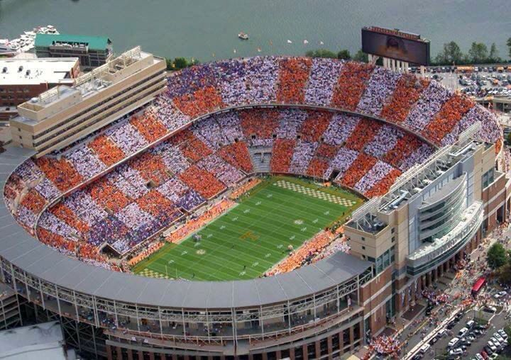

Anteprima · College football · Week 12
LSU cerca di fermare la caduta contro la difesa di Tennessee
LSU @ Tennessee · 21/11/2026, ore 21:30 italiane · Neyland Stadium
Sabato 21 novembre, alle 21:30 italiane, il Neyland Stadium ospita una sfida di SEC tra due squadre che arrivano in condizioni opposte. Tennessee è 8-2 e viene da due vittorie di fila; LSU è 6-4 ed esce da due sconfitte consecutive, contro Alabama e Texas.
La stagione di Lane Kiffin doveva girare attorno a Sam Leavitt, il trasferimento più atteso dell'anno, e i numeri dell'attacco in effetti ci sono: Leavitt lancia molto, è in un buon momento e ha in Jackson Harris un ricevitore in crescita. Il problema sono gli errori. Contro Texas sono arrivati tre intercetti e una sconfitta di un punto, la seconda della stagione dopo quella a Kentucky: LSU fatica a chiudere le partite in equilibrio.
Tennessee vince in un altro modo. Con George MacIntyre il gioco aereo resta corto e prudente, e tutto passa da DeSean Bishop, che corre oltre cento yard a partita e ha già segnato tredici touchdown. La differenza la fa la difesa di Jim Knowles, tra le migliori del paese: ha battuto Alabama e nelle ultime uscite ha concesso pochissimo, dal 34-6 su Kentucky al 22-7 a Texas A&M.
L'ultima sfida, nel 2022, finì 40-13 per Tennessee, e LSU cerca contro i Volunteers una vittoria che le manca da quasi dieci anni. Il mercato americano vede la partita quasi alla pari, con LSU appena favorita: molto dipenderà da Leavitt e dalla sua capacità di non regalare palloni a una delle difese più solide della SEC.
Leggi su PureStats con meteo e numeri